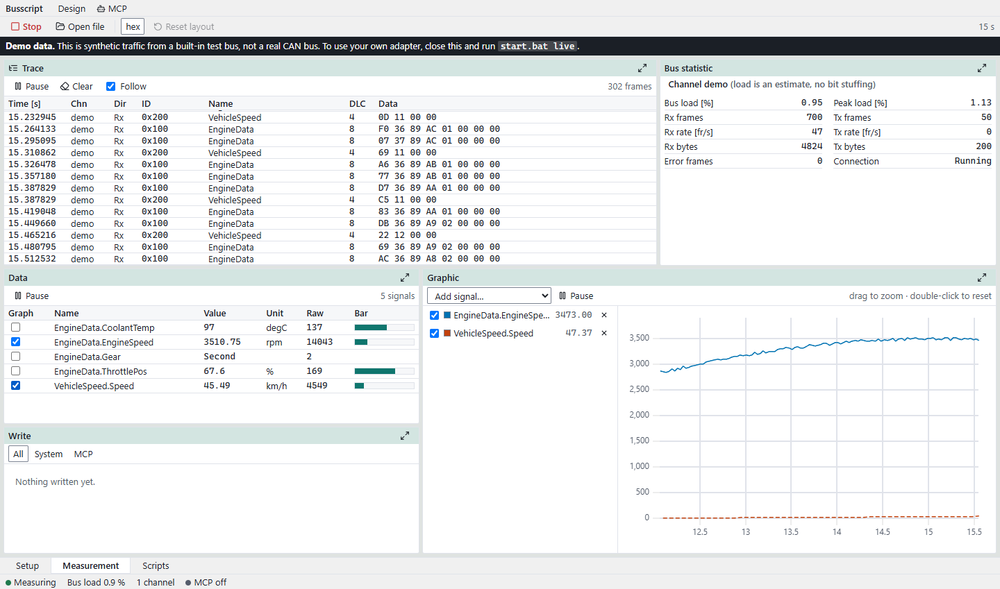
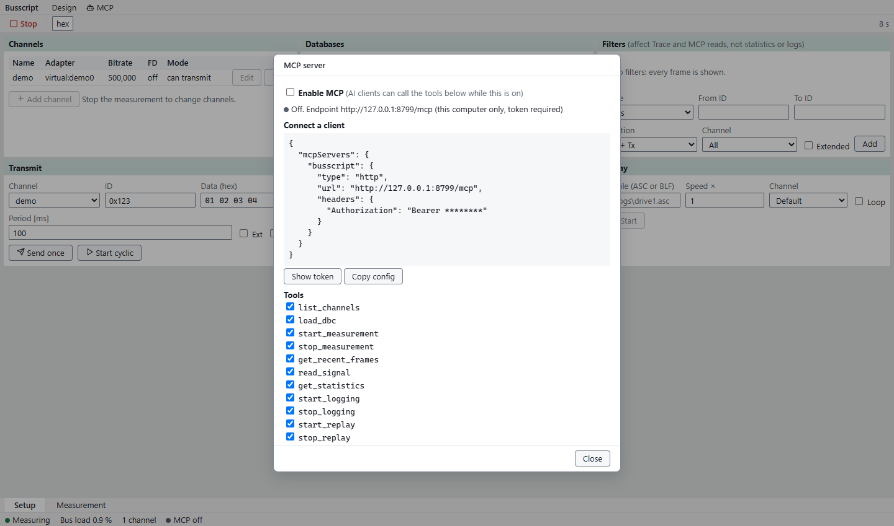
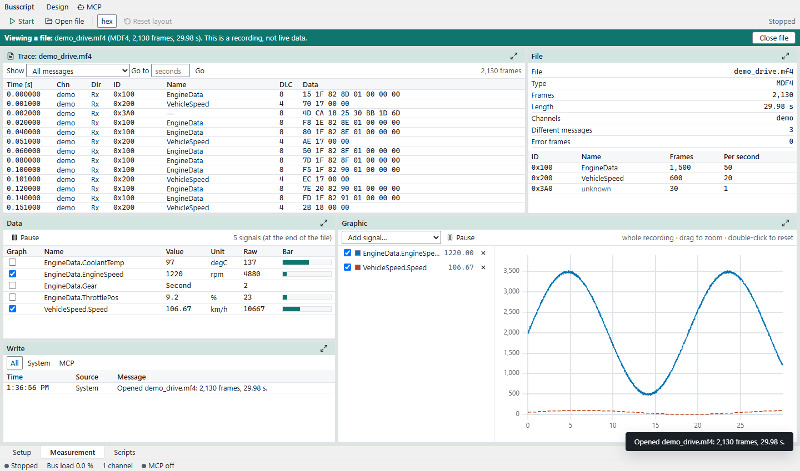
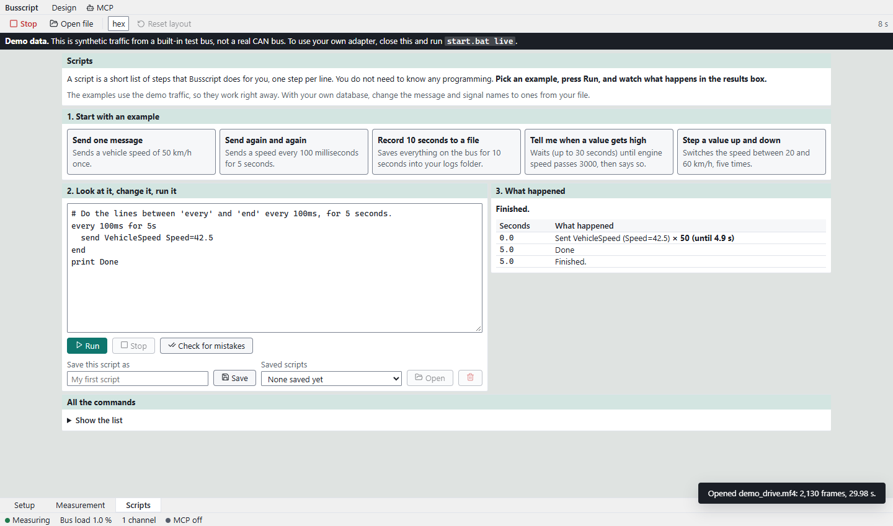

Script your CAN bus.
Busscript is a live CAN bus analyzer with a REST API and an MCP server. Your scripts, CI jobs and AI assistants can read a signal by name and send a frame, with no plugin and no Windows-only COM server.
Download for Windows (.exe)How to run it
CAN tools are hard to drive from code
Automation takes a detour
Controlling a desktop analyzer from a script usually means a Windows COM interface, examples in one language, and a workaround for every signal you want to set.
Logs do not travel well
A log from one tool may not open in another, extended identifiers can get lost in conversion, and being handed a log file with no idea how to play it back is a common first problem.
Based on a small sample of public developer questions (9 posts, 2011 to 2021). It is a direction, not a survey.
What you can do with it
Send a signal by name
Post EngineData with {"Gear": "Second", "ThrottlePos": 20}. Busscript encodes it with your DBC file. Values out of range are refused, so a typo does not become a frame.
REST for everything the UI does
Start and stop, read decoded signals, transmit, log and replay over plain HTTP, from any language. A runnable Python example and curl commands are in the README.
An MCP server for AI assistants
Seventeen tools: read frames and signals, send, log and replay, and open a recording to summarise it or read one signal across the whole file. It is off until you switch it on, each tool has its own switch, and every call shows in an activity log.
Careful about transmitting
Channels start listen-only. MCP transmit is a separate switch, off by default and limited to 20 frames a second. File paths from an assistant stay inside one folder.
Open any recording
Drag in an MF4 (MDF4), ASC, BLF, candump, PEAK trace, CSV or SQLite log and browse it with no hardware: filter by message, jump to a time, plot a signal across the whole file. Drop a DBC file in and every signal gets its name. Sample recordings are included.
Statistics, search and save
See how regularly each message arrives, search a recording with a plain condition like id > 0x100 and d0 == 5, and save all of it or just the time around an event as CSV, ASC, BLF or MF4. Lowest and highest values are kept so short spikes are not missed.
Diagnostics in plain words
Fault codes, engine speed and refusals from OBD-II and UDS, multi-frame messages joined up, and J1939 message names. A setup check tells you which adapter driver to install. No adapter needed to try it: a sample recording is included.
Scripts without programming
The Scripts tab has plain-language examples: send a value, repeat it every 100 ms, record for 10 seconds, wait until a signal passes a limit. Press Run and see what happened. Mistakes are explained with the line they are on.
Logs that keep their identifiers
ASC and BLF logs, written and read back with extended and standard identifiers intact (tested). Replay a log at any speed, or in a loop.
Runs on your machine
One local program for Windows (Python plus your browser). It listens only on 127.0.0.1, needs a token, and sends nothing anywhere.
And the analyzer basics
Live trace with decoded names, a signal table with units and value tables, a plot, bus load and error counts, ID filters, cyclic transmit, CAN FD, DBC files per channel.

Look at recordings. Script it without code.


Download and run
- Download Busscript.exe (about 56 MB) and double-click it. Nothing to install: no Python, no libraries. Your browser opens on a demo bus with synthetic traffic, so you can try everything with no hardware. Windows may say the publisher is unknown, because the program is not code-signed: choose More info, then Run anyway.
- Try a recording: press Open file and choose
samples/demo_drive.mf4, or drag any log onto the window. - Use your own adapter: press Use my own adapter in the demo banner, add a channel on the Setup tab and attach a DBC file. Next time it starts on your channels, not the demo.
- Drive it from code: call the REST API, or switch on MCP and connect your assistant.
TOKEN=$(cat ~/busscript-data/token)
curl -X POST -H "Authorization: Bearer $TOKEN" -H "Content-Type: application/json" -d '{"channel":"demo","message":"VehicleSpeed","signals":{"Speed":42.5}}' http://127.0.0.1:8765/api/transmit/signalThe README has the MCP tool list, the safety notes and a runnable Python example. Developers can build from source: the code is on GitHub.
Pricing
| Plan | For | Price |
|---|---|---|
| Busscript | Anyone with a CAN bus to look at or script | Free, MIT licence. No account, no licence key, works offline. |
What it is not yet
- Windows only. Nothing has been tried on other systems.
- Only the virtual bus has been tested. Real adapters should work through python-can but have not been tried here.
- Logs are tested with files Busscript wrote itself, not with files exported by other tools.
- CAN and CAN FD only: no LIN, J1939 decoding, diagnostics or FlexRay.
- Scripts are a small set of commands (send, wait, repeat, log and a few more), not a full programming language. For more, use REST or MCP from any language.
- MF4 files must contain recorded CAN frames. Files that hold only already-decoded signals are not supported, and MF4 was tested with files Busscript wrote, not with files from loggers.
- The plot uses one shared vertical axis; there are no measurement cursors yet.
- Cyclic transmit timing has not been measured on Windows. Do not treat it as hard real-time.
Questions
What do I need installed?
Nothing. Busscript.exe is a single file for Windows 10 or 11: no Python, no libraries, no internet needed after the download. For a real CAN adapter you may need the adapter maker's driver; the Setup tab has a check that says which.
Which CAN adapters work?
Any interface python-can supports, such as SocketCAN, PCAN and serial-line adapters. Only the built-in virtual bus has been tested so far. Hardware that needs a vendor driver needs that driver installed.
Is it safe to let an AI assistant send frames?
It is your call, and the defaults assume caution. MCP is off, MCP transmit is a second switch that is off, channels are listen-only, and transmits are rate-limited. Sending onto a real vehicle bus can affect real equipment, so keep it off on a live vehicle unless you mean it.
Can bus data trick an assistant?
Frame contents and database names come from other devices and files, so Busscript returns them as structured data and tells the assistant to treat them as data. Sending still needs your switch.
Does it send my data anywhere?
No. The server listens on 127.0.0.1 only, and requests need a token that stays on your machine. This page loads nothing from other sites.
Do I need to know programming to script it?
No. Open the Scripts tab, pick an example such as "Send again and again", and press Run. Each line is one step, like send VehicleSpeed Speed=50 or wait 2s. For real programming, any language that can make HTTP calls works, or an MCP client.
Which files can I open?
Recordings: MF4 (MDF4), ASC, BLF, candump .log, PEAK .trc, CSV and SQLite. Databases: DBC, KCD, SYM, ARXML and CDD. Use the Open file button or drag the file onto the window.
Try it without hardware
One command starts a demo bus. Then point a script at it.
Download for Windows (.exe)